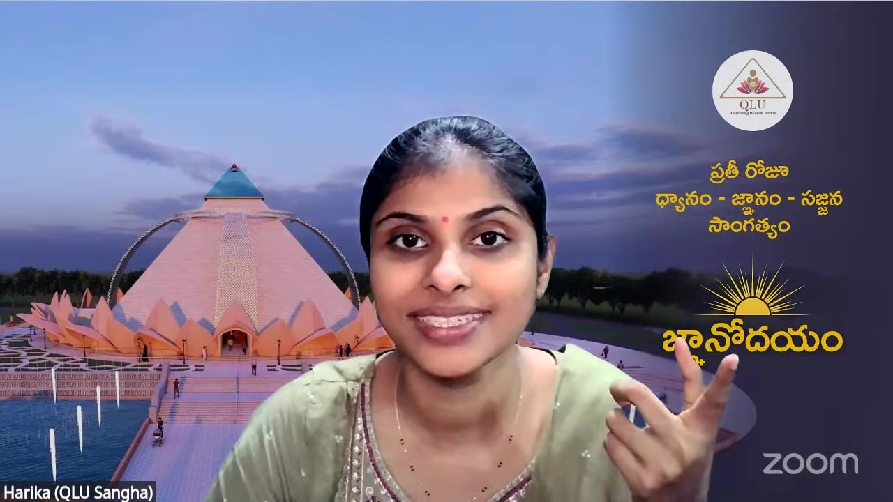

01 · Monthly Wisdom & Key Teachings · Full story
Let Us Transform Hostile Feelings into Compassionate Feelings
When a person’s behavior causes pain to us, the tendency forms of identifying him completely as a bad person. As long as such a fixed image exists, it becomes difficult to listen to the needs in his words. The speaker took the discussion forward with the question of whether we can see even the person we see as an enemy as a human being with feelings and needs.
Topic: Let Us Transform Hostile Feelings into Compassionate Feelings
Original Video: https://www.youtube.com/watch?v=hyWZEw5gvAk
The Enemy Constructed in the Mind
When a person’s behavior causes pain to us, the tendency forms of identifying him completely as a bad person. As long as such a fixed image exists, it becomes difficult to listen to the needs in his words. The speaker took the discussion forward with the question of whether we can see even the person we see as an enemy as a human being with feelings and needs.
The Four Stages of NVC
Observing what happened without judgment, recognizing the feeling that arose in us because of it, understanding the need related to that feeling, and thereafter making a clear request — the speaker recalled these four stages. Separating the event that really happened rather than guessing others’ intentions is the foundation for this practice. This turns the conversation from blames toward needs.
Punishments, Rewards, and Inner Motivation
The speaker questioned the method of punishment if wrong is done, reward if good is done. If one becomes habituated only to external control, the opportunity to grasp by oneself the influence our action shows on others’ lives may decrease. Recognizing the difference between work done with gratitude and work done with fear is important. Especially while dealing with children, discussion proceeded about understanding the need behind the behavior.
Conversation in Intense Conflicts
The speaker mentioned some stories about violent situations and family conflicts. Through them she explained the message that if we do not have the skill of speaking, even small differences can reach an intense level. However, it should be remembered that empathy does not mean leaving protective actions in a dangerous situation. Examination of the original video is needed for the details of the persons and events in the stories.
Language That Changes Naturally with Practice
In the beginning speaking while remembering the four stages may feel artificial. But the speaker said that if one practices observing, listening, and recognizing the need every day, this response gradually becomes natural. The final goal is not mechanically reciting principles; it is increasing understanding toward others in our heart.
Appreciation Is Also a Human Need
Harika explained a context of feeling pain that no one recognized our effort. If the other person does not respond to the work we did, the judgment “my work has no value to them” comes quickly. However, behind it there may be needs such as recognition, appreciation, and partnership. She reminded that if that need is not stated clearly, there is also no opportunity for others to know what we need.
She also connected the spiritual teaching that mentioned appreciation as food for the soul. Recognizing someone’s work and saying how it was useful to us strengthens connection. At the same time, without dealing with the hope of forcibly obtaining praise, expressing our feeling clearly is necessary.
Change from Home to Society
The speaker said that heartfelt conversation should be begun at home, without seeing it only as a big social program. How we are speaking with ourselves, what judgments we are placing on family members, and what language we are using when anger comes are the first steps for change. She explained that the habits formed in the family can expand to groups and to society.
In this context she also mentioned the manner of saying apology. The single word “sorry” may not be enough. Listening to what happened to the other person because of our action, recognizing which need was working in us at that time, and saying how we want to deal thereafter increases the meaning of the apology. The goal should be restoring the relationship, not escaping blame.
Dominance Systems and Learned Obedience
From personal relationships the speaker took the discussion toward social structures. She explained how habits such as listening to the words of those who have authority, not questioning, and pushing one’s needs behind are encouraged in some systems. She mentioned as an example the expectation that women in the family should neglect their needs and give priority only to everyone’s needs.
She discussed that when divisions, positions, and distance between groups increase, mutual understanding becomes difficult. These are social commentaries made by the speaker; they should not be read as specific historical confirmations. The important NVC question here: do we want to make someone into an obedient person, or do we want to build a relationship that also respects his needs?
Resolving Difference Among Children Through Listening
The speaker gave an example of how an adult faced a difference that occurred among small children. Without immediately judging who did wrong, they asked how one person’s action felt to the other and what they felt they wanted. The story proceeded that after the children stated their feelings they understood each other and went back into play.
Here the teaching is not in teaching children harsh philosophical vocabulary. It is in listening to their experience and giving opportunity to state their need. The speaker commented that the same simplicity is possible even in differences among adults, but the judgments and past experiences we carry may become obstacles.
Mediation Amid Intense Violence
The speaker mentioned a conflict in which loss of life occurred between two religious groups. In that story she explained how deeply mutual distrust was present before mediation. In such situations NVC does not mean forgetting violence; it is trying to listen to the pain, fear, and protection need experienced by each side while accepting the harm.
Since the numbers and sequence of events in the captions are not in a fully confirmable manner, they were not given here as exact historical statistics. What is primary in the story is the long practice needed to see the human need even in the person who appears only as an enemy. In intense conflict this vision requires more patience, safety, and responsibility than ordinary conversation.